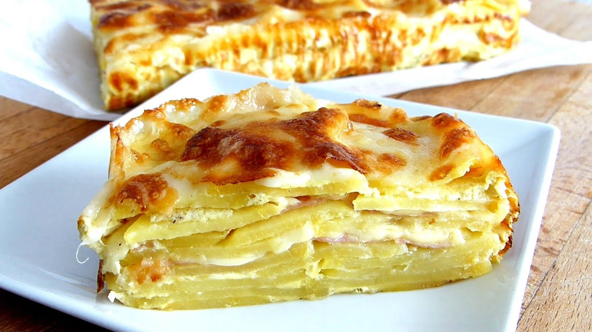

Pastel de Papas

Ingredientes:
4 papas grandes
150g de queso dambo o muzzarella
3 huevos
1 cucharadita de manteca
1/2 taza de leche
Queso rallado
Sal fina
Preparación:
Cortar las papas en rodajas finas y ponerlas a hervir con sal hasta que estén cocidas.
Pincelar con la manteca una fuente honda para horno y colocamos la primera capa de papas hervidas.
Cubrir las papas con una capa de queso. Repetir alternando las papas y el queso hasta terminar.
Batir los huevos con la leche, agregar 1/2 cucharadita de sal y volcar en la preparación de papas.
Espolvorear el queso rallado por encima y llevar a horno a 180° por 35 minutos o hasta que esté dorado.